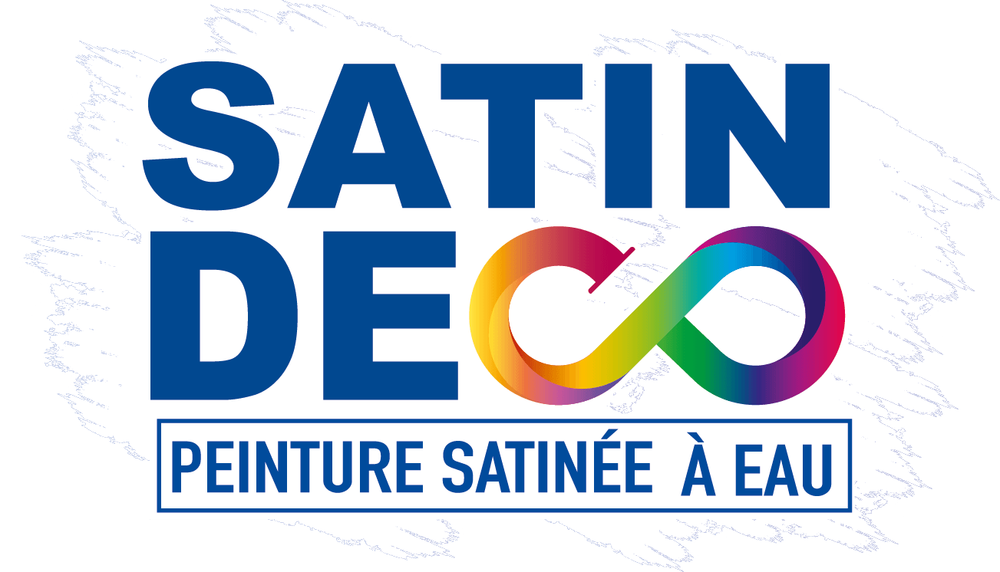

📸
Glissez une photo ici ou choisissez :
Avant
Après
⇄
Aucune couleur sélectionnée

Photographiez ou uploadez votre pièce — l'IA détecte les murs et applique la teinte SATIN DECO choisie, sans toucher aux meubles ni à la décoration.
Glissez une photo ici ou choisissez :